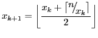
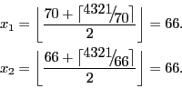

Rounded Square Roots
Problem 255
We define the rounded-square-root of a positive integer n as the square root of n rounded to the nearest integer.
The following procedure (essentially Heron's method adapted to integer arithmetic) finds the rounded-square-root of n:
Let d be the number of digits of the number n.
If d is odd, set x0 = 2×10(d-1)⁄2.
If d is even, set x0 = 7×10(d-2)⁄2.
Repeat:

until xk+1 = xk.
As an example, let us find the rounded-square-root of n = 4321.
n has 4 digits, so x0 = 7×10(4-2)⁄2 = 70.

Since x2 = x1, we stop here.
So, after just two iterations, we have found that the rounded-square-root of 4321 is 66 (the actual square root is 65.7343137…).
The number of iterations required when using this method is surprisingly low.
For example, we can find the rounded-square-root of a 5-digit integer (10,000 ≤ n ≤ 99,999) with an average of 3.2102888889 iterations (the average value was rounded to 10 decimal places).
Using the procedure described above, what is the average number of iterations required to find the rounded-square-root of a 14-digit number (1013 ≤ n < 1014)?
Give your answer rounded to 10 decimal places.
Note: The symbols ⌊x⌋ and ⌈x⌉ represent the floor function and ceiling function respectively.